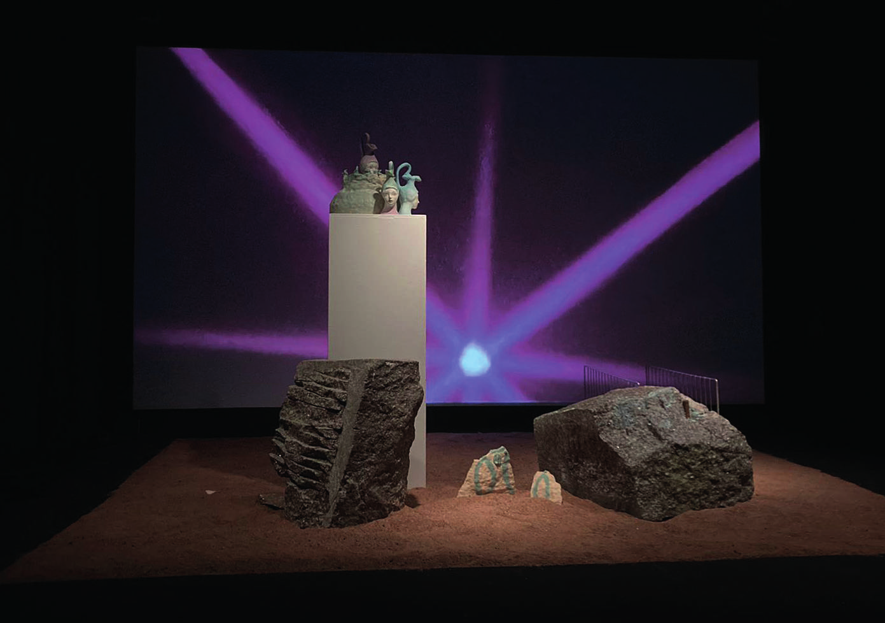
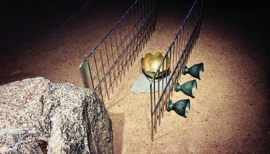
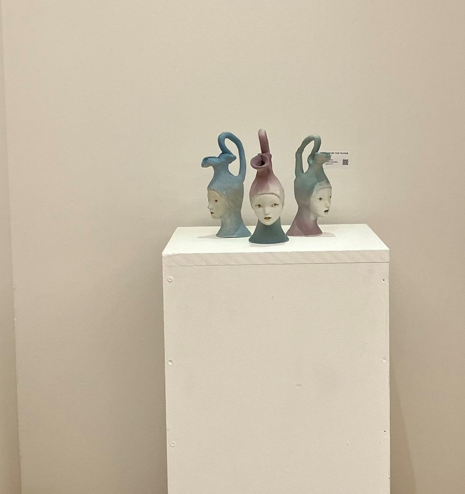

Le poisson rêveur (The Dreamy Fish)


The project includes a short film and installation.
Inspired by an ancient fictional story written by Pu Songling, the artist imagined a post-apocalyptic land where the protagonist encounters a group of non-human beings. Through a loose narrative of self-discovery, the work examines the signification of societal norms. Its almost detached monotone speaks to the blurred line between humans and nonhumans, reality and phantom.
MOVING IMAGE / 7 MIN 30 SEC
INSTALLATION DOCUMENTATION


